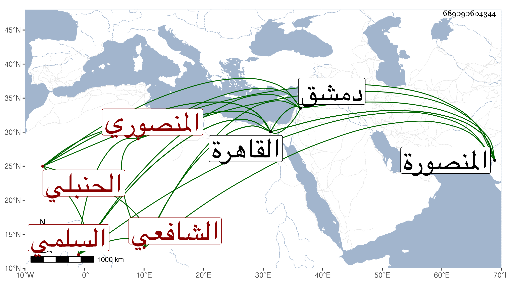

0902Sakhawi.DawLamic.ITO20230111-ara1.EIS1600.689090604344
Biography ID: 689090604344
427
أحمد بن محمد بن علي بن محمد بن أحمد بن عبد الدائم بن رشيد الدين بن عبد الدائم بن خليفة بن مظفر الشهاب السلمي المنصوري الشافعي ثم الحنبلي ويعرف بابن الهائم وبالمنصوري أكثر . ولد في سنة ثمان وتسعين وسبعمائة وقال فيما كتبه إنه سنة تسع وتسعين وبلفظه أنه قبيل القرن بيسير بالمنصورة ونشأ بها فحفظ القرآن ثم انتقل منها إلى القاهرة فحفظ التنبيه وعرضه على الجمال الأقفهسي المالكي وغيره والملحة ودخل في صغره مع والده دمشق وقطن القاهرة في سنة خمس وخمسين وبحث في التنبيه على الشرف عيسى الأقفهسي الشافعي القاضي وألفية ابن مالك على الشمس بن الجندي وأخذ عنه أشياء من تصانيفه في الفن كالزبدة والقطرة وقال لما فرغ من قراءته :
| ثناؤك شمس الدين قد فاح نشره | لأنك لم تبرح فتى طيب الأصل |
| أفاض علينا بحر علمك قطرة | بها زال عن ألبابنا ظمأ الجهل |
وكذا أخذ النحو أيضا عن البدر حسن القدسي شيخ الشيخونية وسمع الحديث على شيخنا والرشيدي وتنزل في حنابلة الصوفية بالشيخونية وتعانى الأدب وطارح الشعراء وصار بأخرة أوحد شعراء القاهرة مع عدم تقدمه في الفنون حتى كان العز قاضي الحنابلة وناهيك به يرجحه على كثيرين ، وقد حج وامتدح النبي صلى الله عليه وسلم بعدة قصائد أنشد بعضها بين يديه صلى الله عليه وسلم وخمس البردة وامتدح غير واحد من الأعيان منهم شيخنا كما أثبت قصيدة له فيه بالجواهر أنشدها بحضرته قديما وكتبها عنه الأكابر كشيخنا ابن خضر وسمعتها من لفظه مع أشياء وجمع نظمه في ديوان كبير ثم انتخبه في مجلد وسط ومما كتبته عنه قوله:
| رب جبان كبدر الدجى | نعشقه وهو لنا يقلي |
| واعجبا منه كريم غدا | يجمع بين الجبن والبخل |
وقوله في مولود لي:
| ليهنك شمس الدين فرعك مشبه | سجاياك والقطر الشهي من الطخا |
| وذلك من جود اإله وفضله | فقرعك من جود وأصلك من سخا |
وكان ظريفا كيسا متواضعا متقللا قانعا مشارا إليه بالشعر في الآفاق . مات بعد انقطاعه في يوم الاثنين سادس جمادى الثانية سنة سبع وثمانين رحمه الله وإيانا .
